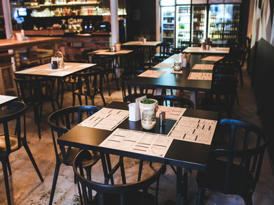
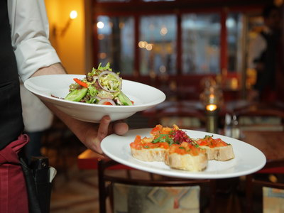

Για την παρασκευή των πιάτων του εστιατορίου ‘Παράκτιον’ χρησιμοποιούμε επιλεγμένα και προσεγμένα προϊόντα της καλύτερης ποιότητας.
Οι σαλάτες και οι πίτσες μας είναι φρέσκα, καθώς επίσης χρησιμοποιούμε έξτρα παρθένο ελαιόλαδο και Κεφαλλονίτικη φέτα.
Το αφράτο και ζεστό ψωμί σε συνδυασμό με το καλό φαγητό θα αφήσει ικανοποιημένους και τους πιο απαιτητικούς επισκέπτες!

Στο εστιατόριο μας μπορείτε να παραγγείλετε:
Κατεβάστε τον κατάλογο μενού σε PDF από ΕΔΩ...